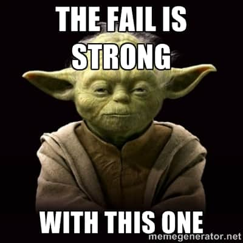

This time, I made discussed things with Mike Davis and then tried this.
[rjdyer@huff all]$ srun --nodes=1 --mem=128G --export=ALL -J assembly --pty /bin/bashI was able to get onto the compute node and then start up a run of dDocent with the following data: - All the samples. - 256 processors per node - Trim - Assemble as Single End (SE) reads - Map the individual to the assembly - SNP call on individuals.
The Printout.
[rjdyer@huff12 all]$ dDocent
dDocent 2.9.4
Contact jpuritz@uri.edu with any problems
Checking for required software
All required software is installed!
dDocent version 2.9.4 started Tue Jan 24 10:11:43 EST 2023
1419 individuals are detected. Is this correct? Enter yes or no and press [ENTER]
yes
Proceeding with 1419 individuals
dDocent detects 256 processors available on this system.
Please enter the maximum number of processors to use for this analysis.
256
Do you want to quality trim your reads?
Type yes or no and press [ENTER]?
yes
Do you want to perform an assembly?
Type yes or no and press [ENTER].
yes
What type of assembly would you like to perform? Enter SE for single end, PE for paired-end, RPE for paired-end sequencing for RAD protocols with random shearing, or OL for paired-end sequencing that has substantial overlap.
Then press [ENTER]
SE
Reads will be assembled with Rainbow
CD-HIT will cluster reference sequences by similarity. The -c parameter (% similarity to cluster) may need to be changed for your taxa.
Would you like to enter a new c parameter now? Type yes or no and press [ENTER]
yes
Please enter new value for c. Enter in decimal form (For 90%, enter 0.9)
.85
Do you want to map reads? Type yes or no and press [ENTER]
yes
BWA will be used to map reads. You may need to adjust -A -B and -O parameters for your taxa.
Would you like to enter a new parameters now? Type yes or no and press [ENTER]
yes
Please enter new value for A (match score). It should be an integer. Default is 1.
1
Please enter new value for B (mismatch score). It should be an integer. Default is 4.
4
Please enter new value for O (gap penalty). It should be an integer. Default is 6.
6
Do you want to use FreeBayes to call SNPs? Please type yes or no and press [ENTER]
yes
Please enter your email address. dDocent will email you when it is finished running.
Dont worry; dDocent has no financial need to sell your email address to spammers.
rjdyer@vcu.edu
dDocent will require input during the assembly stage. Please wait until prompt says it is safe to move program to the background.
Trimming reads and simultaneously assembling reference sequences
parallel: Warning: Starting 30 processes took > 2 sec.
parallel: Warning: Consider adjusting -j. Press CTRL-C to stop.So, again, I am experiencing some problems on the servers. Our server admin person, Mike Davis, did follow up with some comments that one of the servers we were running on was experiencing some odd behaviors…
Try again.